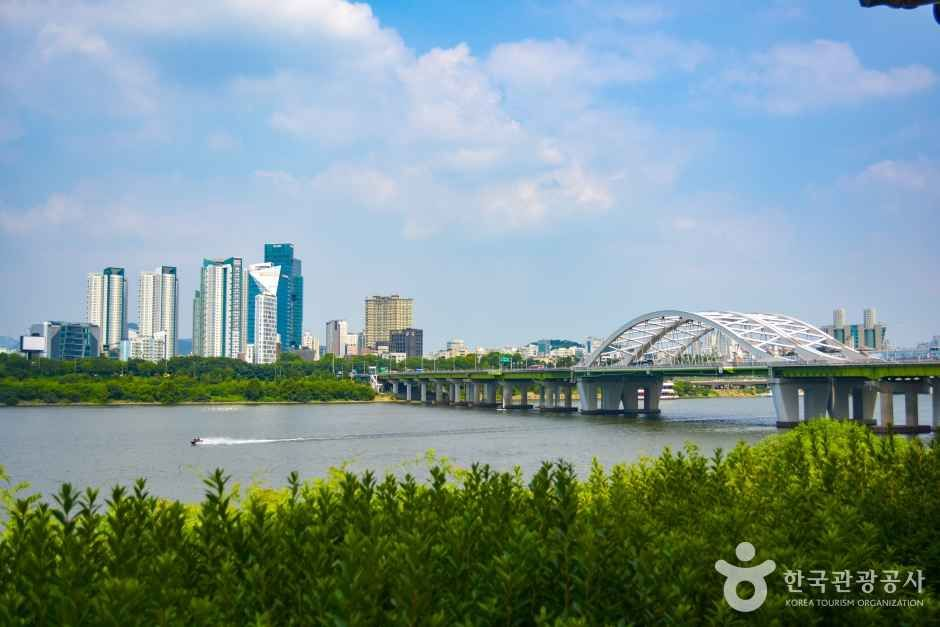
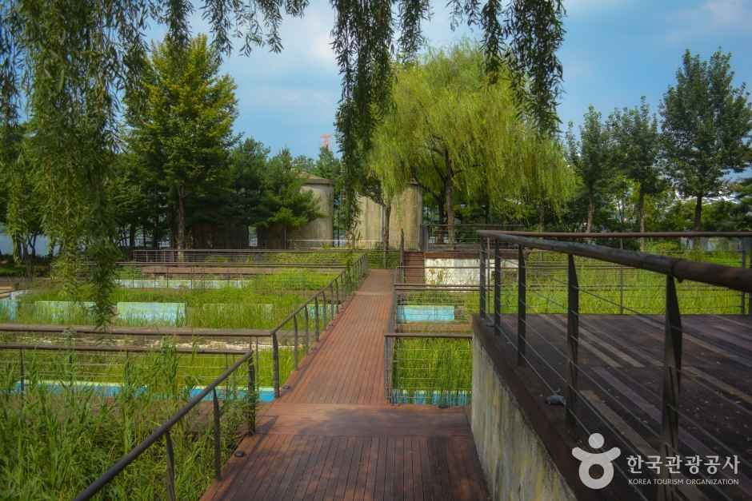
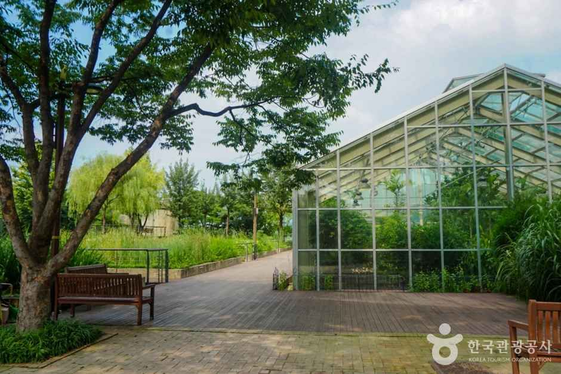
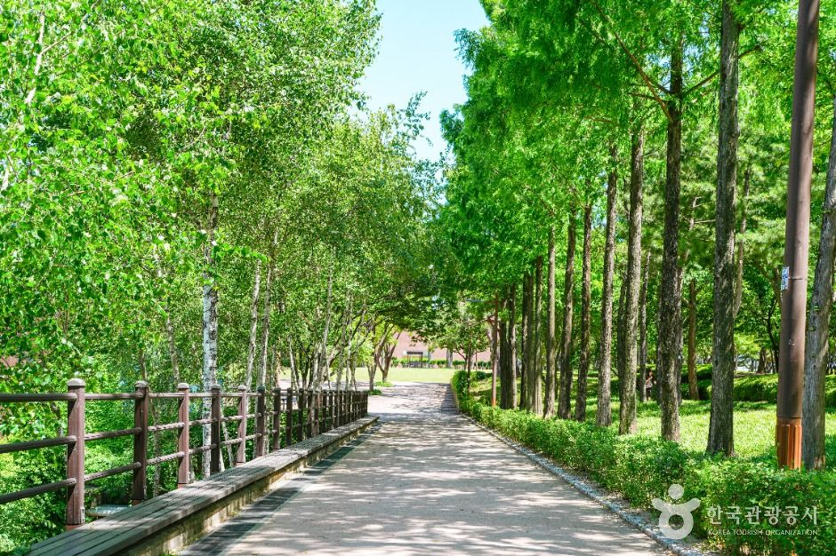
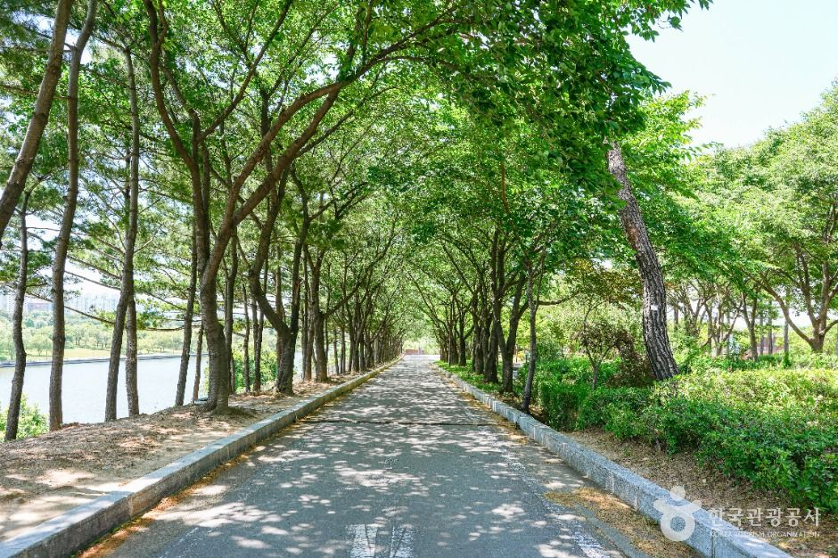

Seonyudo Park Seoul Guide: Overview
This Seonyudo Park Seoul guide covers Korea's first recycled ecological park, built inside an old water treatment plant on a small island in the Han River. Seonyudo Park (선유도공원) mixes concrete tanks and pillars with water gardens, ivy and tall trees, and it is reached on foot by the arched Seonyugyo Bridge, which glows in rainbow colours at night.
It is free, open from 6 a.m. to midnight and only 10 minutes' walk from Seonyudo Station, which makes it an easy add-on to Hapjeong, Mangwon or Yeouido. This guide covers its history, the main gardens, how to get there, the best route and practical tips. We checked the details against Korea Tourism Organization (KTO) data, the Seoul Parks website and Visit Seoul.
"Walk in across the bridge at sunset, wander the gardens, and leave after dark when Seonyugyo lights up over the river."

From Water Plant to Eco Park
Seonyudo was once a small peak, Seonyubong, admired by painters and poets for its views over the river. Most of the peak was quarried away during the Japanese colonial period, and from 1978 to 2000 the island held a water treatment plant supplying southwest Seoul.
Instead of demolishing the plant, the city reused its structures and opened Seonyudo Park in 2002 as Korea's first environmental regeneration park, a "park of water" covering about 110,000 m². The pump room became an exhibition hall, the purification tanks became aquatic gardens and the roof of a clean-water tank was removed to leave a forest of ivy-covered pillars.

What to See
- Garden of Green Columns: rows of concrete pillars from an old water tank, now wrapped in ivy; the most photographed spot in the park.
- Water Purification Garden and Aquatic Plant Garden: former settling tanks planted with reeds, lotus and water lilies, linked by boardwalks.
- Garden of Time: a sunken garden inside an old tank, with moss, ferns and walls that show the layers of the old plant.
- Seonyudo Story Hall: the former pump room, now a small exhibition on the island and the Han River (closed Mondays).
- Seonyugyo Bridge and Observation Deck: a 469 m pedestrian-only bridge built with France for the millennium, with wide views of the river, Seongsan Bridge and the World Cup Fountain.
- Riverside walk: a tree-lined path around the island's edge, quiet and shady in summer.


Visitor Information
| Item | Details |
|---|---|
| Location | 343 Seonyu-ro, Yeongdeungpo-gu, Seoul (서울특별시 영등포구 선유로 343) |
| Hours | Park: daily 06:00–24:00 · Story Hall: Tue–Sun 09:00–18:00 (winter 09:00–17:00), closed Mondays |
| Admission | Free |
| Phone | Park office +82-2-2631-9367; Korea Travel Hotline 1330 |
| Subway | Line 9 Seonyudo Station exit 2 (about 10 min walk); Dangsan Station, Lines 2 & 9 (about 15 min); Hapjeong Station (about 20 min) |
| Bus | Blue 602, 603, 604, 761; green 5712, 5714, 6712, 6716, 7612 (stop: 선유도공원) |
| Parking | Disabled permit holders only; others use Yanghwa Hangang Park lot 3 |
| Facilities | Toilets, café, free wheelchair and stroller loan (park office, 09:00–18:00), nursing room |
Sources: Korea Tourism Organization data for 선유도공원; Seoul Parks (parks.seoul.go.kr) Seonyudo Park pages and park map; Visit Seoul. Photos © Korea Tourism Organization (KOGL Type 1, attribution), unmodified. No AI-generated images.
Getting There and Walking Route
The most scenic way in is from Seonyudo Station (Line 9). Leave by exit 2, walk north to Yanghwa Hangang Park and cross Seonyugyo Bridge onto the island, about 10 minutes in total. Buses on Yanghwa Bridge also stop right at the park's side entrance (선유도공원 stop).
For a 1–1.5 hour loop, cross the bridge, pause at the observation deck, then walk through the Aquatic Plant Garden, Garden of Time and Garden of Green Columns, and finish on the riverside path. If you have more time, walk back over the bridge and continue along the Han River towards Mangwon Hangang Park or take a river cruise from Yeouido.

Tips for Visiting
- Go late afternoon: sunset light over the river is beautiful, and the bridge lights come on after dark.
- Visit in season: lotus and water lilies peak in summer; the trees turn gold in autumn.
- Bring water, not a picnic: food is discouraged to protect wildlife; there is a café on site.
- Mind the bridge: it is busy with photographers at sunset; keep to one side.
- Plan for Mondays: the gardens are open but the Story Hall is closed.
How It Compares with Other Han River Parks
| Seonyudo Park | Yeouido Hangang Park | Haneul Park (World Cup Park) | |
|---|---|---|---|
| What it is | Recycled water plant turned garden island | Large riverside lawns and cruise pier | Hilltop grassland on a former landfill |
| Best for | Photography, quiet gardens, bridge at night | Picnics, cycling, river cruises | Silver grass in autumn, city views |
| Time needed | 1–1.5 hours | 2+ hours | 1.5–2 hours |
| Admission | Free | Free | Free |
| Nearest subway | Seonyudo (Line 9) | Yeouinaru (Line 5) | World Cup Stadium (Line 6) |
Who It Suits
- Great for: Photographers and couples looking for a calm, unusual garden with river views.
- Great for: Architecture and design fans interested in urban regeneration.
- Great for: Travellers staying in Hapjeong, Mangwon or Yeouido who want a short half-day walk.
- Less ideal: Families wanting a big playground or picnic lawn; Yeouido Hangang Park is better.
- Less ideal: Cyclists, since bikes are not ridden inside the park.
Plan Your Seoul Trip
Seonyudo Park FAQ
Where is Seonyudo Park?
Seonyudo Park (선유도공원) is on a small island in the Han River, halfway along Yanghwa Bridge, in Yeongdeungpo-gu, Seoul. The address is 343 Seonyu-ro (서울특별시 영등포구 선유로 343).
How do I get to Seonyudo Park by subway?
Take Seoul Subway Line 9 to Seonyudo Station, leave by exit 2 and walk about 10 minutes (around 800 m), crossing the Seonyugyo footbridge from Yanghwa Hangang Park. Dangsan Station (Lines 2 and 9) is about 15 minutes on foot.
What are the opening hours and is it free?
The park is open every day from 06:00 to 24:00 and admission is free. The Seonyudo Story Hall exhibition building opens Tuesday to Sunday, 09:00–18:00 (09:00–17:00 in winter), and closes on Mondays.
Can I drive to Seonyudo Park?
Only vehicles with a disabled parking permit can park inside the park. Other drivers should use Yanghwa Hangang Park parking lot 3 and walk across Seonyugyo Bridge. Public transport is easier.
Can I bring my dog or a bike?
Seoul's park office asks visitors to avoid bringing pets to protect the ecology; if you do, keep them on a leash and clean up. Bicycles and kick scooters should not be ridden inside the park, and food is discouraged to protect wildlife.